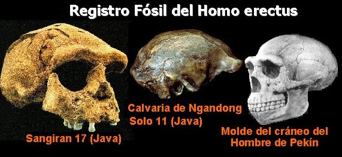
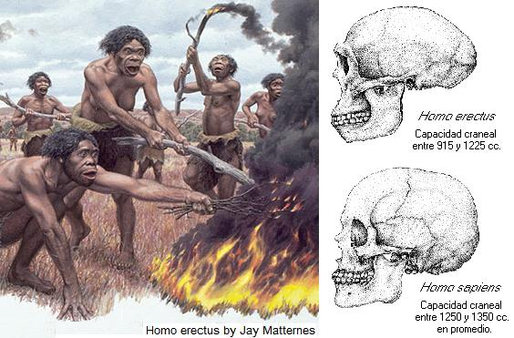

Una de las especies humanas extintas mejor conocidas es el Homo erectus. Los restos de esta especie que proceden de China, se les dio el popular nombre de «hombre de Pekín». A pesar que ninguna persona instruida negaría la existencia de estos seres en el pasado, los creacionistas les restan importancia diciendo mentiras sobre ellos.
La publicación creacionista «¿Abuelito?» de CHICK PUBLICATIONS dice respecto al hombre de Pekín: «Supuestamente databa de hace 500.000 años. Pero toda la evidencia ha desaparecido»
Pero, ¿Desapareció realmente toda la evidencia del «hombre de Pekín»? ¿No hay más restos del Homo erectus en Asía?
Los restos del «Hombre de Pekín» se hallaron entre 1921 y 1937, en el periodo entreguerras en un yacimiento a 40 kilómetros al sudoeste de Pekín llamado Zhoukoudian. El hallazgo consistía de una colección de cerca de 40 individuos en Zhoukoudian, entre ellos 5 calvarias (cráneos sin el esqueleto de la cara), numerosos dientes y restos del esqueleto postcraneal.
En 1941, desapareció la colección de fósiles, en plena Segunda Guerra Mundial, mientras era enviada desde Pekín a Estados Unidos.
Sin embargo, la evidencia no desapareció del todo, pues el científico Franz Weidenreich realizó, previó a la desaparición, un estudio con fotografías, radiografías y réplicas de los fósiles. En excavaciones recientes se han encontrado nuevos restos que han encajado con las réplicas hechas por Weidenreich lo cual dice mucho de la honestidad del trabajo de este científico.
Los creacionistas desprecian las dataciones dadas para estos restos fósiles diciendo: «Supuestamente databa de hace 500.000 años», para confundir al lector. Sin embargo, el yacimiento del Zhoukoudian no ha desaparecido. Sigue allí y los trabajos de estratigrafía que se han realizado muestran que los restos de la cueva abarca un período de 600.000 años, y los restos que quedaron enterrados en los sedimentos de Zhoukoudian tienen una edad entre 550.000 y 300.000 años.
Es cierto que los fósiles originales de la cueva de Zhoukoudian se perdieron en confusos hechos, pero algo que los creacionistas no mencionan es que existen otros yacimientos de Homo erectus en China e Indonesia[1].

Los restos del Homo erectus muestran claras diferencias respecto a la humanidad actual. Los restos chinos del Homo erectus tienen capacidades craneales que varían entre 915 cc y 1225 cc mientras que el promedio para los humanos modernos (Homo sapiens) está entre 1250 y 1350 cc. Cronológicamente la especie Homo erectus abarca un tiempo comprendido desde hace un millón de años, con los restos de Modjokerto (Java), hasta hace 50.000 años con los restos del yacimiento de Ngandong (Java).
Los Homo erectus presentan las estructuras craneales mucho más marcadas. Por ejemplo el torus frontal está muy desarrollado y recto (Torus es el reborde del hueso, por lo que al hablar del torus frontal se está haciendo referencia al reborde del hueso frontal), el hueso occipital es más angulado y tiene un torus occipital muy marcado, las paredes del cráneo muestran mayor grosor y la bóveda craneal es baja. Los huesos del esqueleto también presentan un mayor grosor.
Hoy en día muchos paleoantropólogos creen que el Homo erectus es una rama del árbol filogenético humano que no condujo a los humanos modernos, sino que los erectus fueron reemplazados por los Homo sapiens salidos de África. Sin embargo, hay algunos expertos que consideran que los Homo erectus dieron origen a la humanidad actual tras una evolución en todo el Viejo Mundo. La primera hipótesis se conoce como la del «origen africano» y la segunda, en la cual el Homo erectus es participe, se cono ce como la hipótesis multirregional. Con frecuencia se escucha a los creacionistas alegar que los biólogos al no estar de acuerdo en este punto están mostrando la flaqueza de sus postulados. La verdad es que este tipo de debates conllevan a una revisión juiciosa del registro fósil y alienta futuras búsquedas de restos humanos.

Después de revisar los datos concernientes al Homo erectus es poco creíble la idea de que «toda la evidencia desapareció» tal como lo afirman los creacionistas. En lugar de esto el panorama es el de una riqueza de fósiles de los cuales se pueden extraer valiosa información para reconstruir la historia de nuestro género.
Notas
Volver a la sección Ciencias de los orígenes
Comentarios
Comments powered by Disqus